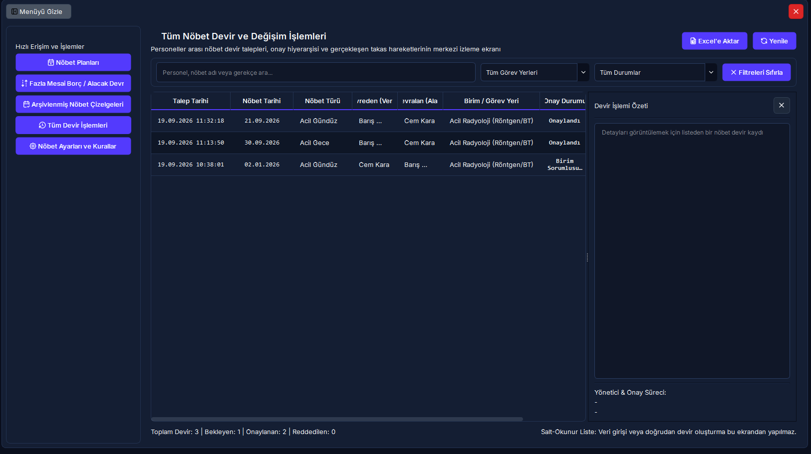
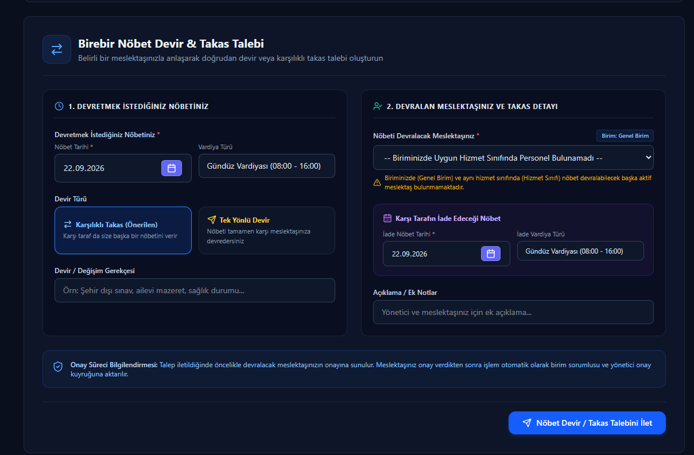
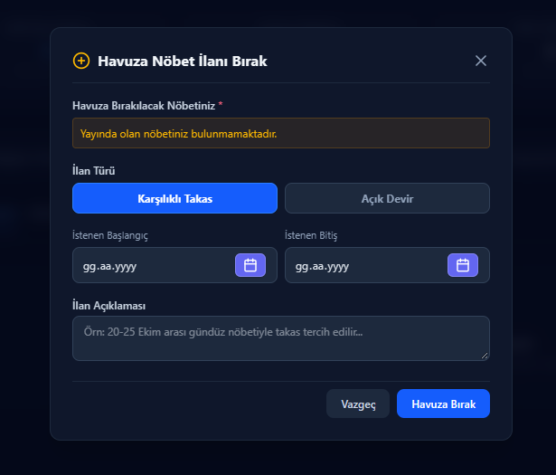
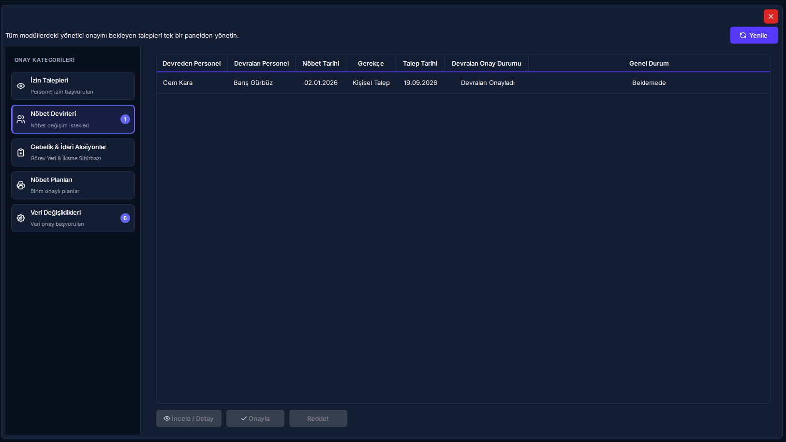

Nöbet Devir, İkame & Acil Mazeret Yönetimi
Personeller arası birebir devir ve karşılıklı takas taleplerini, 3 kademeli onay zincirini, Web Portalı Nöbet Değişim Havuzunu (48 saat aylık kota ve 36 saat son teslim sınırı), acil mazeret akıllı ikame ve geri alma işlemini, ders programı revizyonunu ve 3 adımlı gebe personel aksiyon sihirbazını yönetmenizi sağlar.
Kısa Reçete: Ay Ortası Nöbet Değişimi, İkame ve Gebelik Transferi
Kesinleşmiş çizelgedeki ay içi nöbet değişimi, ani hastalık veya gebelik bildirimlerinin sahipsiz vardiya bırakmadan ve mevzuata tam uyumlu çözülmesi.
Karşılıklı değişim için masaüstünden [Devir Talebi] veya Web Portalından Nöbet Değişim Merkezi üzerinden talep açın; ani krizlerde [Acil Mazeret ve İkame] ile uygun yedekleri atayın; gebelik bildiriminde Merkezi Yönetici Aksiyon ve Onay Sihirbazı adımlarını onaylayın.
Hizmet sınıfı eşitliği, 24 saat dinlenme ve taban çalışma saati otomatik denetlenir; 3 kademeli onay tamamlanınca çizelge güncellenir ve hatalı girilen mazeretler tek tıkla eski haline döndürülür.
5N1K Kural ve Arayüz Çözümleme Tablosu
Nöbet devri, takas, Web Portalı havuzu, acil mazeret ve gebe personel aksiyon merkezindeki kurallar.
Kritik Sahada Yanlış Bilinen Kurallar (Mit Avcısı)
Süreç Akış Şeması
ve Kısıt Uygun mu?"} B -->|Gebe / Farklı Sınıf| C["ENGEL: Talep Reddedilir"] B -->|Uygun| D["3 Kademeli Onay: Meslektaş - Birim - Yönetici"] D --> E(["Çizelge Güncellenir"]) end subgraph S2 ["2. AŞAMA: ACİL MAZERET VE GERİ ALMA"] direction LR F["Acil Mazeret & İkame"] --> G["Puanlı İkame Adayları Listelenir"] G --> H["Kaydet ve Uygula"] H -.->|Hatalı İşlem| I["Seçili Mazereti Geri Al"] end subgraph S3 ["3. AŞAMA: GEBELİK SİHİRBAZI (3 ADIM)"] direction LR J["Gebelik Bildirimi: Gece ve Radyasyon Kapanır"] --> K["1: Radyasyonsuz Nakil & 2: Eski Birime İkame"] K --> L(["3: Gündüz Mesaisi Dengeleme & Onay"]) end
- Devir, Takas ve Havuz: Gebelik, heyet muafiyeti, farklı hizmet sınıfı veya 24 saat dinlenme ihlali varsa sistem engeller; uygun talepler devralan meslektaş, birim sorumlusu ve yönetici onaylarıyla çizelgeye işlenir.
- Acil Mazeret ve Geri Alma: Yönetici ani mazerette puanlı ikameleri tek pencerede atar; hatalı girişlerde geçmiş sekmesinden orijinal nöbetleri geri döndürebilir.
- Gebelik Aksiyon Sihirbazı: Gebelik kaydı gece ve radyasyon kilitlerini anında kapatır; yönetici aynı sihirbazda nakli, eski birim ikamesini ve yeni birim gündüz mesaisini tek onayla tamamlar.
Arayüz Ekran Görünümleri




Adım Adım İşlem Rehberi
1. Masaüstü veya Web Portalından Devir / Havuz Talebi Açma ve Onaylama
- Masaüstünde yayındaki plandan [Devir Talebi] butonuna tıklayın (veya çizelgede satırı seçip talep açın); Alan Personel, Devir Nedeni ve gerekirse notu girip [Devir Talebi Olustur] butonuna basın.
- Web Portalında Nöbet Değişim Merkezi ekranından Açık Havuz sekmesinde [Havuza Bırak] ile ilan açabilir, Doğrudan Devir / Takas ile meslektaşınıza teklif gönderebilir, Onay Bekleyenler ve Geçmiş sekmelerinden süreci izleyebilirsiniz.
- Masaüstündeki [Tüm Devir İşlemleri] ekranında satır seçildiğinde sağ panelde talebin özeti ve onay aşamaları doğal dille görüntülenir.
2. Acil Mazeretle Toplu İkame Atama ve Hatalı Kaydı Geri Alma
- Yayındaki plan inceleme ekranında [Acil Mazeret ve İkame] butonuna basın; Yeni Acil Mazeret ve İkame sekmesinde Personel, Başlangıç/Bitiş Tarihleri ve İptal Nedenini seçip [Etkilenen Nöbetleri ve İkame Önerilerini Getir] butonuna tıklayın.
- Sistem her boş nöbet için uygunluk puanına göre adayları sıralar; yedekleri doğrulayıp [Kaydet ve Uygula] butonuna basın.
- Hatalı bir işlem olduysa Mazeret Geçmişi ve Geri Alma sekmesinden satırı seçip [Seçili Mazereti Geri Al] butonuna tıklayarak eski nöbetleri geri yükleyin.
3. Ders Programı Revizyonu ve Gebelik Yönetici Aksiyon Sihirbazı
- Dönem ortasında üniversite ders günleri değişen personel için Nöbet Ayarları > Personel Talepleri içindeki [Ders Programını Revize Et] butonuna basın; revizyon başlangıç tarihini ve yeni hafta içi günlerini (Pzt–Cum) işaretleyip [Revizyonu Kaydet] butonuna tıklayın.
- Gebe personel bildiriminde özlük kartından Gebelik Bildirimi ekranını açıp rapor ve tahmini doğum bilgilerini kaydederek [Bildirimi Kaydet ve Nöbetleri İptal Et]'e basın; açılan Merkezi Yönetici Aksiyon ve Onay Sihirbazı üzerinde yeni radyasyonsuz birimi, eski birim ikamelerini ve gündüz vardiyalarını doğrulayıp [Tüm Aksiyonları Onayla ve Çizelgeyi Güncelle] butonuna tıklayın.
Sıkça Sorulan Sorular (SSS)
Gebe veya emziren personele acil durumda nöbet devredilebilir mi?
Farklı hizmet sınıfları (örneğin Teknisyen ile Hemşire) arasında takas yapılabilir mi?
Hayır. Hizmet Sınıfı Eşitliği ilkesi gereğince nöbet devri ve takası yalnızca aynı görev grubu ve hizmet sınıfındaki meslektaşlar arasında yapılabilir.
Aylık zorunlu mesaisini tamamlamamış personel tek taraflı nöbet devredebilir mi?
Hayır. Aylık zorunlu taban çalışma süresi altındaki nöbetler karşılıksız tek yönlü devredilemez; yalnızca fazla mesai kapsamındaki saatler devredilebilir. Taban saat altındaki değişimler için aynı ay içinde Karşılıklı Takas seçilmelidir.
Nöbete 36 saat kaldığında havuz ilanı nasıl sonuçlanır?
Nöbet başlangıcına 36 saatten az kaldığında yeni havuz ilanı açılamaz, mevcut ilan ise zaman aşımına alınarak kapatılır. Zorunlu bir mazeret varsa personel amirine başvurur ve yönetici inisiyatifiyle [Acil Mazeret ve İkame] süreci işletilir.